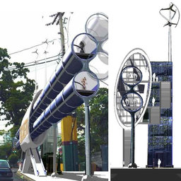
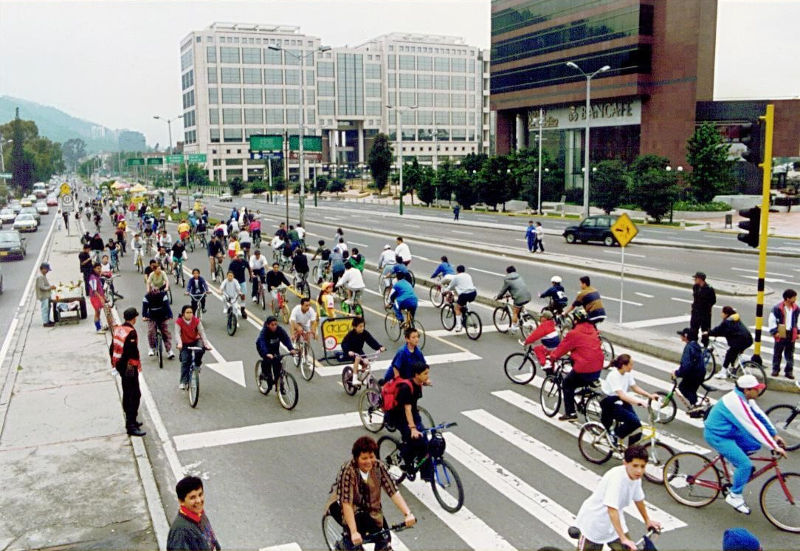

Bicimetro: La innovación del Transporte Urbano
Por Arq. Daniela Patricia Corral Hernández
19/11/2014

¿Sera posible desarrollar sistemas de transporte limpios o ecológicos que sean compatibles a la movilización de los individuos y la preservación y saneamiento de nuestro hábitat?
Cada vez son más los ciudadanos que optan por dejar sus carros y se animan a desempolvar las bicicletas guardadas en los garajes y utilizarlas como medio de transporte ya sea habitual o por recreación. Las altas cifras de contaminación de las grandes ciudades y el gasto que conlleva mantener un vehículo de motor han propiciado este hecho.
De acuerdo al Instituto Tecnológico de Massachussets (MIT), el producto de un transporte libre de contaminación ambiental esta en proporción a la selección de respuestas relacionadas con los siguientes aspectos:
- El Fortificar y realinear el servicio de transporte al público.
- Optimizar y promover nuevas infraestructuras viales.
- Reducir las emisiones de los vehículos.
Al mismo tiempo, la industria automovilística está desarrollando una nueva generación de vehículos que no dependan, en su totalidad, del consumo de combustibles fósiles.
Estas propuestas son:
- Vehículos de emisión cero o ultra baja emisión.
- Vehículos híbridos.
- Vehículos eléctricos.
- Transportes ultra ligeros.
Pero estas alternativas traen consigo el impacto negativo de los conflictos de circulación, accidentes, contribuir con el deterioro de la calidad ambiental, microsismos que afectan a nuestras estructuras, la contaminación sonora y una series de otros factores que nos impactan negativamente.
En base a esto, El Arquitecto visionario y urbanista Richard Moreta Castillo desarrolló un proyecto llamado El BICIMETRO. Es un sistema sostenible de movilidad rápida, a prueba de las inclemencias del tiempo, proyectado inicialmente para: solucionar el congestionamiento de nuestras vías, complementar al Metro, evitar la contaminación ambiental, mejorar la salud de los ciudadanos a través del ejercicio y proporcionar un sistema de alta rentabilidad que le ofrezca un servicio más eficaz y agradable que el de los medios de transporte público tradicionales.
Consiste en unos conductos elevados a través de los cuales los ciclistas se desplazarían por encima de la ciudad, pudiendo acceder a la calle o a los puntos clave de conexión con otros transportes.
Las pistas están separadas en dos vías de dirección opuestas, una debajo de la otra. Estas a su vez crean una corriente dinámica de aire que les permite a los ciclistas tomar ventaja del viento de cola. Esta reducción de la resistencia contra el aire les permite a los ciclistas reducir la resistencia del aire en un 90%, pudiendo generar velocidades de 40 km/hr.
Se calcula que por el Bici-Metro se desplazarían aproximadamente 350.000 ciclistas en doce horas y podrán tener una capacidad de 18.000 bicicletas. Falta saber qué ciudad será pionera en implantar este nuevo método de transporte eficiente.

Algunas ventajas del Bicimetro son:
- Incrementa la velocidad
- Reduce el gasto de energía
- Elimina las intersecciones para producir un total de tiempo de viaje que compite con otras formas de transportación motorizada en cuanto al tiempo de viaje.
- Promueve hacer ejercicios como un estilo de vida urbano e incrementa la interacción en nuestra esfera social.
Los beneficios del uso de la bicicleta como medio de transporte en la ciudad son indiscutibles, desde los personales vinculados a la salud, al ahorro de tiempo y dinero, hasta las ganancias para la ciudad completa, como son el aporte a la descontaminación y a la descongestión de nuestras saturadas ciudades. Si bien la conciencia de que el uso de bicicleta nos beneficia a todos ha aumentado en los últimos años, surgiendo movimientos independientes que promueven el uso de ésta – Movimiento Ruedas del Desierto, Laguna Bikes, Eco Ciclismo 2.0, entre otros. Solo el 2% del total de los viajes realizados en la Laguna se hacen en este medio de transporte. (Estudio de Logit 2011)
“La bicicleta es la máquina más eficiente alguna vez creada: convirtiendo calorías en combustible, una bicicleta consigue el equivalente de tres mil millas por galón. Una persona pedaleando una bicicleta usa la energía más eficientemente que una gazela o un águila y las bicicletas con marco triangular pueden cargar unas 10 veces su propio peso, algo que ningún automóvil o avión pueden igualar”.
Bill Strickland